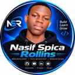

Curious
I like asking questions, exploring ideas and understanding how things work.

Nasif Spica Rollins01 / ABOUT
A student, an independent learner, and someone who enjoys understanding how things work.
MY STORY
I'm Nasif Spica Rollins, currently a secondary school student in Uganda. Outside my school studies, I spend time exploring technology, learning new things and experimenting with ideas that interest me.
I'm especially interested in software development and artificial intelligence. I've tried building websites and AI-related projects, and I have built and deployed a basic WhatsApp group-administration bot. I'm still learning how to code, and each project gives me a chance to understand more.
Electronics is another interest of mine. I enjoy exploring gadgets, learning about their components and developing practical repair skills.
HOW I APPROACH LIFE
I like asking questions, exploring ideas and understanding how things work.
I know learning takes time. I'm open to listening, improving and starting from the basics.
I believe progress comes from effort, patience and continuing to practise.
LOOKING AHEAD
My long-term ambition is to become a technology entrepreneur, bringing software development, artificial intelligence and electronics together to create practical solutions.